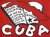

De: La Frikipedia, la enciclopedia extremadamente seria.
De: La Frikipedia, la enciclopedia extremadamente seria. De: La Frikipedia, la enciclopedia extremadamente seria.
| De la serie Países del planeta tierra: | |||||
| Isla Fidelandesa Azucarera de Cuba | |||||
|---|---|---|---|---|---|
| |||||
| Lema: VIVA FIDEL CASTR | |||||
| Himno: La vaya-mesa-mas-mala-ke-me-comprao
| |||||
| 
| |||||
| Capital | Miami. | ||||
| Mayor ciudad | la Habana, la esposa del habano? | ||||
| Lenguas oficiales | cubano, version gangosa del español | ||||
| Gobierno | Cheguevarista Comunista | ||||
| {{{título_líder}}} | Fidelelio Castrado - Primera Dama Celia Cruz | ||||
| Área | la isla, todo a lo que se llegue nadando de esta | ||||
| Población | 11 millones adentro otros 11 regados por todo el mundo | ||||
| Moneda | CUC(alias: baros, moneda dura, Chavito, peso combertible), peso cubano(moneda simbolica; solo sirve para comprar el pan, los condones y chispa de tren) | ||||
| Zona horaria | 10 horas/avion desde europa | ||||
| Dominio Internet | .rom | ||||
| Código telefónico | +53 pero no llamen que les cobran como 2 euros el minuto
| ||||
| ¡singa singa que la vida es pinga y si no singas te vas pa la pinga! | |||||
Dícese de la isla caribeña propiedad de Fidel Castro famosa por su ron, sus puros y por la revolución. Primero fue explotada por el Imperio Español, después saqueada por el imperialismo yanky y finalmente sometida a un bloqueo por dicho imperio.De acuerdo con la religión llamada "izquierdismo latinoamericano" es en Cuba que se encuentra el Paraíso prometido, razon por la cual todos los izquierdistas de latinoaméria quieren irse a vivir a Cuba...después de muertos.
Cuba esta geográficamente ubicada en el culo del Mar Caribe, mas precisamente frente a México y cerca de Belice. Su suelo es de tierra colorada extraída de Marte y tiene tres lunas. Tiene un relieve montañoso hundido por las grandes mareas caribeñas.
Tiene un clima de mierda variado en el que generalmente se destacan los hechos naturales de proporciones bíblicas como los tornados, tsunamis y Lluvias ácidas (Estos últimos se dan una o dos veces por mes). En cuanto a las precipitaciones llueve arena mezclada con ácido clorhídrico, y de vez en cuando con agua.
Al no tener contacto con el mundo exterior (Así como un "Gran Hermano" gigante), posee una cultura muy singular.
Las danzas son una importante rama de la cultura cubana, en ellas se fuma habano hasta tener cáncer de pulmón hartarse y se bebe desde ron hasta el agua que le ponen a los perros.
Generalmente estas danzas se hacen en honor al dios Marlboro el cual permite que tengan una buena cosecha de tabaco para poder vivir.
Al ser bastante monótona la vida en la isla debido a que lo único que hacen es fumar no tienen influencias externas como la tele o la internet los escritores cubanos han creado obras tan interesantes como "El movimiento de las olas respecto a la arena" y "Viendo crecer a una planta (De tabaco)". Muchas veces la literatura habla entre los problemas que tienen los Delfines (Que reclaman la isla como propia) y los humanos (que quieren comerse a los delfines).
No guitarras, no baterías, no instrumentos lo único que utilizan son paquetes de tabaco, tambores y monedas con lo que logran reggaeton (o como mierda se diga) de excelente calidad.
Se dedican a crear esculturas con tabaco, madera y cocos. Además suelen crear cuadros con pintura de arena y extracto de tierra de la selva.
La política de Cuba se basa en una democracia dictadura por parte del presidente Fidel (que al parecer es inmortal) la cual simplemente hace que los pobres sigan siendo pobres y los ricos se hagan mas ricos.
Otra de las pequeñas características de la política de aquí es que para poder salir o entrar al país, es mas fácil que lo haga un extranjero que un cubano. La politica de este país es controlada por el hombre del traje verde.en 1959 tras un golpe de estado el MR-26-7 o movimiento revolucionario del 26 de julio. y monta una dictadura socialista. que es totalmente desaprobada por el que se cree DIOS pero solo es un país conocido como gringolandia.
La sociedad cubana, al igual que muchas otras sociedades que se discriminan hasta hartarse es entre ricos y pobres.
Son aquellos que cuando les chupas un brazo saben bien que tienen toda la plata del país guardada en sus mansiones y casas en la playa del caribe y en bancos mundiales.
Prácticamente manejan toda la economía de la isla ya que son unos de los pocos que pueden salir del país y traer los materiales como para crear empresas nacionales. Ven a los pobres como una especia de
plaga que habría que exterminar ya que siempre andan haciendo manifestaciones y cosas así.
Son los que simplemente tienen el dinero suficiente como para comer E ir a puterios.
se la pasan trabajando para ganar apenas alguna moneda y el gobierno no los tiene en cuenta. Son la mayoría de la población de la isla y todos juntos no llegan a tener el dinero que posee un cubano rico. Ven a los de arriba como algo mafioso que gana su dinero ilegalmente y robándoselo a los pobres.
La isla posee animales autóctonos como comunistas que son seres que, hasta el día de hoy, no saben bien cual es su función en la naturaleza, aunque cada 10 años operan a Castro y le ponen órganos jóvenes para seguir con la locura del "inmortal comunismo del siglo XXI" (formado por él y Hugito que ya se nos subió al cielo).
| |
|---|
| Bahamas | Barbados | Dominica | Granada | Guyana | Haití | San Cristóbal y ¿Nieves? | San Vicente y las Granadinas | Santa Lucía | Trinidad y Tobago | Uruguay | Venezuela |
Autor(es):